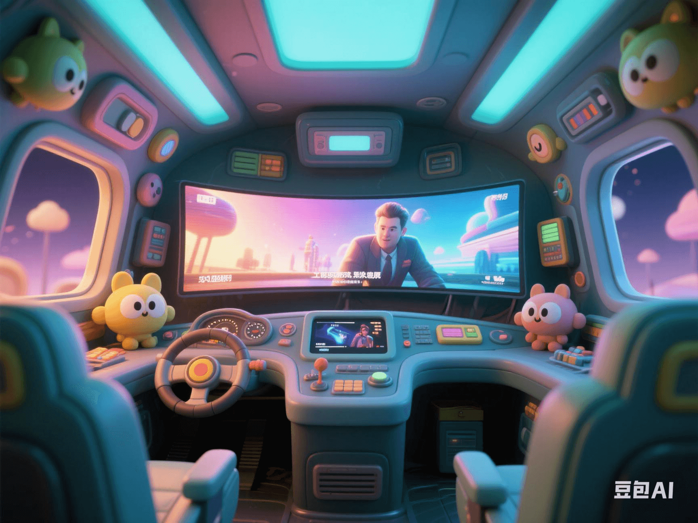

Xiaomi Car's Black Technology: How Does the Remote带鱼 Screen Transform the Cockpit into a Mobile Cinema?
PeaceLove.Top Insights :2025-04-19
🚗 Xiaomi Car's Black Technology: How Does the Remote带鱼 Screen Transform the Cockpit into a Mobile Cinema? 🍿
🚗 The future of the intelligent cockpit is no longer just a simple driving tool. With the advancement of technology, Xiaomi is creating an amazing smart car. The innovative design with a remote带鱼 screen completely breaks the boundaries of the traditional cockpit, turning every drive into a mobile-cinema experience. 🎥
🎬 Remote带鱼 Screen: Enabling Owners to Enjoy Extraordinary Audio-Visual Experiences
Imagine that during a red-light stop or a long-distance trip, you only need to press the 'cinema mode' in the in-car system, and the large-sized带鱼 screen in the car will start working. The screen can extend from the rear-seat area or automatically adjust its position to create a wide-range visual experience, allowing you to immerse yourself in movies, live broadcasts, or other multimedia content. The technological highlights of the带鱼 screen are as follows:
- Ultra-wide field of view: The size of traditional car screens is usually limited by the dashboard and in-car space. The design of the带鱼 screen makes the most of the in-car space, providing a wider field of view.
- High-resolution display: This screen is equipped with ultra-high-resolution technology, with extremely high clarity, ensuring that both the driver and passengers can enjoy a cinema-like visual feast. 👁️
- Whole-car interaction system: Through various methods such as the intelligent voice assistant, touch control, and gesture operation, the driver and passengers can easily adjust the screen content and even form a multi-person interaction mode in the car.
🚗 Intelligent Interaction: Upgrading In-Car Entertainment
In addition to the traditional navigation and entertainment functions, Xiaomi's innovative design also incorporates rich intelligent interaction experiences, further enhancing the owner's usage experience:
- Voice assistant: The owner can control the content switching, volume adjustment, navigation route, etc. of the带鱼 screen through voice commands, eliminating the trouble of manual operation. 🎤
- Situation-mode switching: The system can automatically adjust the in-car screen display content according to different driving scenarios. For example, it plays movies on the highway and automatically switches to driving-navigation display in the urban area.
- Passenger entertainment function: Passengers in the rear seats can also connect their own devices to the in-car system to enjoy personalized audio-visual content.
Technical support:
- AI algorithm optimization: Through artificial-intelligence algorithms, the带鱼 screen can analyze real-time data such as the viewing preferences and eye-movement trajectories of the owner or passengers, and intelligently recommend content to further enhance the personalized experience.
- Automatic brightness and angle adjustment: The brightness and angle of the带鱼 screen can be automatically adjusted according to the in-car and outside-car environments, ensuring the best visual effect under different lighting conditions. 🌞🌙
🌍 Changing the Driving Experience: Turning the Car into a Mobile 'Home'
Currently, more and more consumers are no longer satisfied with the traditional car functions. They hope to enjoy a more diverse and efficient space for entertainment, work, and rest in the car. Xiaomi's带鱼 screen is designed to meet this demand:
- Home-cinema mode: Whether it's a family outing or a solo trip, the owner can turn the inside of the car into a private cinema and enjoy content such as movies, TV shows, and games.
- Mobile office: For business people who often travel on business, the large screen in the car is not only an entertainment tool but also an office assistant, supporting functions such as document processing and video conferencing. 📈
- Leisure and relaxation: The owner and passengers can enjoy entertainment content such as games, music, and social media through the带鱼 screen in the car, making long-distance trips no longer boring.
🏆 Why Is It 'Black Technology'?
Xiaomi's innovation is not just about the '带鱼 screen'; it represents the ultimate combination of intelligent and user-friendly design. The charm of black technology lies in its ability to发挥 its maximum effectiveness in different scenarios:
- Automation and intelligence: Through artificial intelligence, cloud computing, and big-data analysis, the in-car entertainment system can achieve personalized recommendation and experience.
- Balancing technology and safety: The use of the带鱼 screen can achieve 'zero-interference' control through intelligent voice and gesture operations without affecting the driver's attention, ensuring driving safety.
🚀 Future Outlook: More Possibilities for Intelligent Travel
With the continuous advancement of technology, Xiaomi will not only apply this technology to future mass-produced cars but also plans to integrate the带鱼 screen with more intelligent devices to create a broader new era of intelligent travel. For example, in the future, car owners may be able to link with other intelligent devices at home through the Internet of Vehicles, achieving seamless connection between the home and the car.
🛣️ Conclusion: The Future Is Here
Whether you are a car owner or a passenger, a smart car with a带鱼-screen mobile cinema will bring you a unique experience. It not only redefines the possibilities of car entertainment but also makes every journey no longer boring through advanced interaction design, allowing you to enjoy a seamlessly connected lifestyle in the car. 🚘🎬